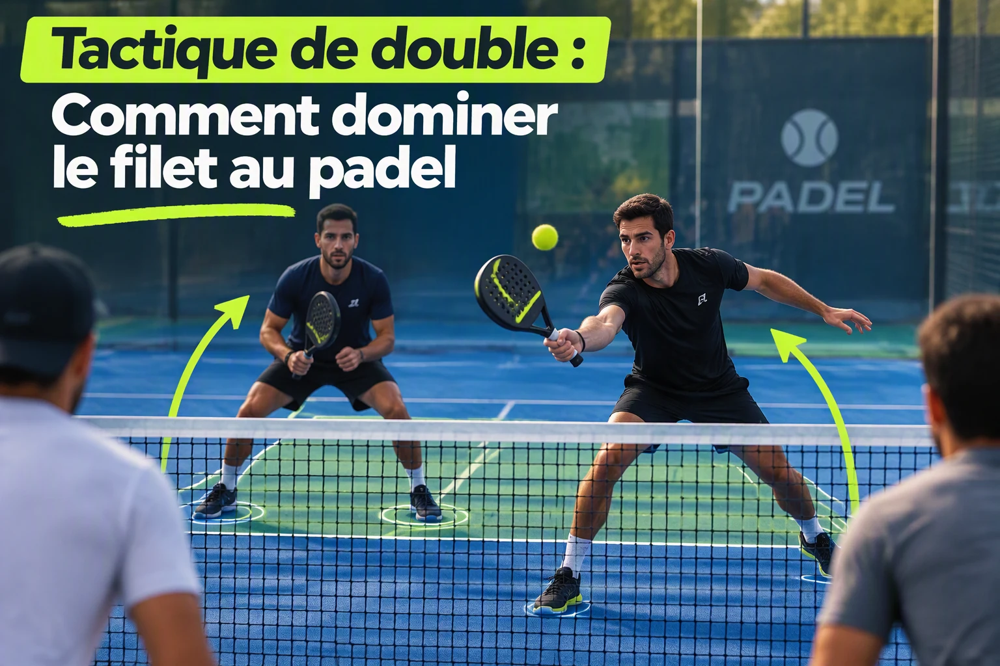

Tactique de double : comment dominer le filet au padel
Au padel, beaucoup de paires pensent perdre les points parce qu'elles ne frappent pas assez fort. En réalité, elles les perdent souvent quelques secondes plus tôt : un partenaire avance, l'autre hésite, le milieu s'ouvre et la paire adverse n'a plus qu'à choisir la brèche. Dominer le filet ne consiste pas à se coller au filet. Il s'agit d'y arriver ensemble, d'y rester équilibrés et de savoir quand céder du terrain.

- Créer une balle difficile à attaquer.
- Avancer avec son partenaire, pas avant lui.
- Fermer d'abord le centre.
- Construire avec la volée avant de chercher le point gagnant.
1. Le filet donne l'initiative, pas le point gratuitement
Depuis la zone d'attaque, vous prenez la balle plus tôt et laissez moins de temps à la défense. Vous pouvez volleyer dans les pieds, jouer au centre ou ouvrir un angle après avoir déplacé la paire adverse. Mais cette position reste forte uniquement si vous êtes stables. Trop près, le moindre lob vous met en fuite. Trop loin, vos volées partent souvent sous le niveau du filet.
Ne cherchez pas une marque fixe au sol. Placez-vous assez près pour jouer la volée devant le corps, tout en gardant la possibilité de pivoter sur un lob. Ajustez ensuite d'un pas selon la qualité de votre balle et la tendance adverse.
Publicité responsive intégrée
2. Monter parce que la balle vous y autorise
Une montée réussie commence avant le premier pas vers l'avant. Elle commence par une balle qui empêche les adversaires de vous attaquer confortablement.
Après le service
Le serveur avance immédiatement. Le partenaire déjà au filet ajuste sa profondeur pour que la paire arrive sur une ligne proche.
Après un lob profond
Montez si le lob oblige réellement l'adversaire à reculer ou à jouer au-dessus de l'épaule. Un lob court appelle plutôt la prudence.
Après une chiquita réussie
Si la balle tombe dans les pieds des volleyeurs et provoque une réponse montante, gagnez du terrain ensemble.
Le réflexe qui change tout
Après votre coup d'approche, regardez une fraction de seconde la trajectoire produite. Si l'adversaire joue en équilibre et au-dessus du filet, n'avancez pas aveuglément. Si la balle le contraint à frapper bas, tard ou en reculant, c'est votre feu vert.
3. Au filet, imaginez une corde entre les deux partenaires
Quand la balle part à gauche, la paire coulisse à gauche. Quand elle part à droite, la paire coulisse à droite. Le joueur face à la balle protège sa ligne et peut presser davantage. Son partenaire se rapproche du centre pour fermer la diagonale la plus simple. Ce mouvement paraît modeste, mais il évite le grand classique du padel loisir : laisser un couloir au milieu tout en défendant chacun sa moitié comme en simple.
- Même profondeur : évitez la formation « un devant, un derrière ».
- Centre prioritaire : une balle croisée exceptionnelle est plus difficile à réussir qu'une balle dans l'espace entre vous.
- Petits pas : restez disponibles au lieu de vous figer après votre volée.
- Annonce précoce : « moi », « toi », « lob » et « recule » suffisent souvent.
4. La première volée prépare, la suivante fait mal
Au filet, la tentation est de vouloir terminer dès la première balle. C'est précisément là que les fautes arrivent : geste trop grand, accélération sans angle, balle offerte à la vitre. Une volée sobre, profonde et jouée au centre produit souvent davantage. Elle réduit les angles adverses, maintient la paire en place et prépare une balle plus courte.
Une séquence simple à reproduire
Fixer
Volée profonde au centre ou sur le joueur en mouvement.
Observer
Qui défend en retard ? Qui laisse le milieu ?
Accélérer
Jouez dans les pieds ou ouvrez l'angle sur la réponse courte.
5. Bien gérer le lob : bandeja, recul ou abandon du filet ?
Tous les lobs ne demandent pas la même réponse. Sur un lob accessible, la bandeja sert d'abord à conserver le filet : préparation compacte, trajectoire profonde et replacement immédiat. Sur un lob plus haut ou plus profond, forcer une frappe en déséquilibre coûte souvent plus cher que reculer et reconstruire.
Vous pouvez conserver le filet
La balle reste devant vous, vous frappez en équilibre et votre partenaire peut couvrir l'espace libéré.
Vous devez défendre
La balle passe franchement derrière vous, vous courez vers la vitre ou votre frappe aérienne serait jouée en reculant.
Un bon recul n'est pas un aveu de faiblesse. C'est parfois la décision la plus offensive du point, parce qu'elle évite de donner une balle facile et vous permet de repartir sur une défense organisée.
6. Les erreurs que l'on voit presque à chaque partie
Vous gagnez quelques centimètres sur la volée, mais perdez tout temps de réaction sur le lob.
La paire se coupe en diagonale et offre le milieu. Attendez le partenaire ou annoncez clairement la montée.
Un lob moyen peut être contrôlé par une bandeja. Ne rendez pas automatiquement le filet.
Le centre offre plus de marge et crée souvent la confusion sans vous exposer au contre.
7. Deux exercices pour progresser en paire
L'exercice de la corde invisible
Jouez un point en imposant une règle : aucun partenaire ne peut avancer ou reculer de plus d'un grand pas sans que l'autre l'accompagne. Le point ne compte pas si la paire se retrouve sur deux profondeurs différentes. L'objectif n'est pas de rester parfaitement alignés, mais de retrouver rapidement une structure commune.
Le jeu en trois volées
La paire au filet n'a pas le droit de gagner avant sa troisième volée. Les deux premières doivent construire au centre ou dans les pieds. Cet exercice freine la recherche du coup spectaculaire et développe la lecture de la défense.
Pour dominer le filet, avancez sur une bonne balle, déplacez-vous avec votre partenaire, protégez le centre et acceptez de jouer une volée de plus. La paire qui paraît la plus agressive n'est pas toujours celle qui frappe le plus fort. C'est souvent celle qui laisse le moins d'espace.